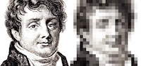
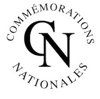
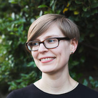

| When | Monday 2018-09-24 and Wednesday 2018-09-26 from 13:30 to 14:30 | What | Keynotes | Where | Cité International Universitaire de Paris (CIUP) How to get there ? |
"Drawing sounds: Fourier, Kœnig, and Scott"
Patrick Flandrin
In his seminal work, first published in 1811, Joseph Fourier was primarily concerned with the building of an analytic theory of heat, but it was realized soon after that the expansion methods he developed for this purpose had potential applications far beyond, in physics as well as in mathematics. This was in particular the case for sounds with, in the middle of the XIXth century, a quest for graphical representations in time and/or in frequency, thanks to dedicated devices. One apparatus designer, Rudolph Kœnig, was particularly instrumental in such studies, in the two domains. On the one hand, he built an actual Fourier analyzer based on resonators, manometric flames and mirrors. On the other hand, he collaborated with Édouard-Léon Scott de Martinville on his project of a « phonautograph » that, in 1857, permitted the first ever recording of a human voice in the form of a graph on a paper sheet. Whereas Scott’s objective was transcription and not restitution, some of his sound graphs have been recently scanned and digitized, allowing us to actually hear him singing.
Beyond celebrating this year the 250th birthday of Fourier and reviving the forgotten memory of Scott, intertwining those complementary approaches via Kœnig is believed to offer a way of revisiting issues such as the physical significance of Fourier modes, or the questionable necessity of their use as features in modern recognition systems.
 
Patrick Flandrin received the engineer degree from ICPI Lyon, France, in 1978, and the Doct.-Ing. and Docteur d’État degrees from INP Grenoble, France, in 1982 and 1987, respectively. He joined CNRS in 1982, where he is currently Research Director. Since 1991, he has been with the Signals, Systems and Physics Group, within the Physics Department at ENS de Lyon, France. He is currently President of GRETSI, the French Association for Signal and Image Processing. His research interests include mainly nonstationary signal processing (with emphasis on time-frequency and time-scale methods), scaling stochastic processes and complex systems. He authored two monographs in those areas, the most recent one being Explorations in Time-Frequency Analysis (Cambridge University Press, 2018). Dr. Flandrin was awarded the Philip Morris Scientific Prize in Mathematics (1991), the SPIE Wavelet Pioneer Award (2001), the Prix Michel Monpetit from the French Academy of Sciences (2001), the Silver Medal from CNRS (2010), and the Technical Achievement Award from the IEEE Signal Processing Society (2017). Past Distinguished Lecturer of the IEEE Signal Processing Society (2010-2011), he is a Fellow of the IEEE (2002) and of EURASIP (2009), and he has been elected member of the French Academy of Sciences in 2010.
Using Data and Machine Learning to Support Human Musical Practices
Rebecca Fiebrink
It’s 2018, and machine learning seems to suddenly be everywhere: playing Go, driving cars, serving us targeted advertising. Machine learning can compose new folk tunes and synthesise new sounds. What does this mean for those of us who compose or perform new music, or who create new interactions with sound? What does our future hold, besides sitting at home all day listening to algorithmically generated music after robots take our jobs?
In this talk, I’ll invite you to consider what I believe to be a more important and interesting question: How can we instead use machine learning to better support human creative activities? I’ll describe some highlights from my own research and others', including using machine learning and related techniques to support new approaches to musical instrument design, to enable latency-free networked musical performance and personalised audience experiences, and to enable a much broader range of people—from software developers to children to music therapists—to build new musical and sonic interactions. I’ll discuss how machine learning can support human creative practices, for instance by enabling faster prototyping and exploration of new technologies (including by non-programmers), by supporting greater embodied engagement in design, and by changing the ways that creators are able to think about the design process and about themselves. I’ll discuss how these findings inform new ways of thinking about what machine learning is good for, how to make more useful and usable creative machine learning tools, how to teach creative practitioners about machine learning, and what the future of human creative practice might look like.

Dr. Rebecca Fiebrink is a Senior Lecturer at Goldsmiths, University of London. Her research focuses on designing new ways for humans to interact with computers in creative practice. As both a computer scientist and a musician, much of her work focuses on applications of machine learning to music: for example, how can machine learning algorithms help people to create new musical instruments and interactions? How does machine learning change the type of musical systems that can be created, the creative relationships between people and technology, and the set of people who can create new technologies? Much of Fiebrink’s work is also driven by a belief in the importance of inclusion, participation, and accessibility. She works frequently with human-centred and participatory design processes, and she is currently working on projects related to creating new accessible technologies with people with disabilities, designing inclusive machine learning curricula and tools, and applying participatory design methodologies in the digital humanities.
Fiebrink is the developer of the Wekinator, open-source software for real-time interactive machine learning whose current version has been downloaded over 10,000 times. She is the creator of a MOOC titled “Machine Learning for Artists and Musicians,” which launched in 2016 on the Kadenze platform. She was previously an Assistant Professor at Princeton University, where she co-directed the Princeton Laptop Orchestra. She has worked with companies including Microsoft Research, Sun Microsystems Research Labs, Imagine Research, and Smule. She has performed with a variety of musical ensembles, including as a laptopist in Sideband and Squirrel in the Mirror, the principal flutist in the Timmins Symphony Orchestra, and the keyboardist in the University of Washington computer science rock band "The Parody Bits.” She holds a PhD in Computer Science from Princeton University.
ISMIR 2018 is jointly organized by
ISMIR 2018 is grateful to our sponsors
Platinum Partners


Gold Partners


Silver Partners


Bronze Partners